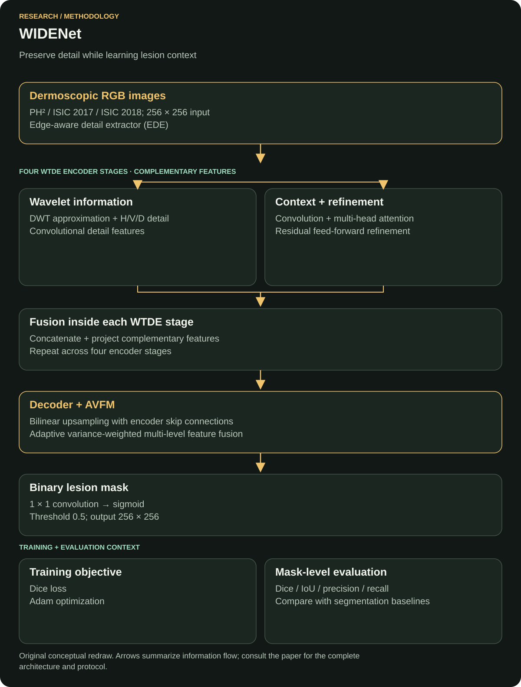

Medical imaging · Lesion segmentation
WIDENet: A Novel Lightweight CNN for Robust Skin Lesion Segmentation
WIDENet studies efficient segmentation of skin lesions in dermoscopic images. The focus is the lesion boundary, including fine structures that can disappear during conventional downsampling.
Case study updated
Read the original paperProblem
Skin-lesion segmentation asks which pixels belong to a lesion. WIDENet addresses uncertain borders and the loss of fine detail during downsampling in a compact segmentation model.
The output is a mask, so the engineering problem concerns both coverage and boundary placement. A model can recover much of the lesion while still drawing an unhelpful contour.
Why this matters
A predicted mask can be compared directly with an expert annotation, exposing missed regions and extra background pixels. Reliable localization also provides a consistent region for later measurements of lesion shape and extent.
Dataset
The paper reports the following train / validation / test image counts:
| Dataset | Train | Validation | Test |
|---|---|---|---|
| PH² | 140 | 30 | 30 |
| ISIC 2017 | 2,000 | 150 | 600 |
| ISIC 2018 | 2,594 | 100 | 1,000 |
Inputs and binary reference masks are resized to 256 × 256. The partitions describe the paper's benchmark setup.
Evidence: full paper, Sections III-A and III-B.
Method / model
An edge-aware detail extractor feeds wavelet-Transformer dual-encoder stages. Parallel frequency-detail and self-attention features are fused; an upsampling decoder uses encoder skips, adaptive variance fusion and a binary segmentation head.
Within each dual-encoder stage, wavelet and attention representations are concatenated and projected. Decoder skip connections carry encoder detail into the reconstructed mask.


Why this model
Wavelet decomposition separates low-frequency structure from horizontal, vertical and diagonal detail, preserving signals useful for lesion edges. Self-attention connects distant image regions so the encoder can represent the broader lesion shape.
The decoder restores spatial resolution using encoder skips. Adaptive variance fusion weights features from several decoder levels, connecting fine detail with the reconstructed context before the final prediction.
Loss function
Reported objective: Dice loss with smoothing 10−5. Inference uses a sigmoid and a 0.5 threshold.
Overlap definition: Dice(P, G) = 2 |P ∩ G| / (|P| + |G|).
Dice loss minimizes one minus differentiable overlap. Smoothing stabilizes the calculation when the overlap or region size is small; the paper's named objective and smoothing value are verified, while its exact reduction over pixels and images is an implementation detail.
The inference threshold converts the probability map into a hard mask. Adjusting it changes the balance of missed lesion pixels and included background.
Evidence: full paper, Sections III-D and III-E.
Evaluation metrics
The main reported measures are Dice, intersection over union (IoU), precision and recall.
Dice and IoU compare a predicted region with its reference mask. Precision concerns extra pixels incorrectly included as lesion; recall concerns lesion pixels that were missed. Their balance is easier to assess alongside representative failure masks than from one aggregate score.
The unit of evaluation is overlap and pixel classification within lesion masks.
Baseline comparison
Comparisons include U-Net, U-Net++, DeepLabV3(+), PAN, PSPNet and LinkNet. For ISIC 2018, the paper reports U-Net Dice 0.8872 and WIDENet Dice 0.8970.
The absolute Dice difference is 0.0098 in that benchmark setting. The reported comparison covers mask overlap under the paper's data partitions and training protocol.
Evidence: full paper, Section IV-C and Table 6; difference calculated from the reported values.
Results
- Reported Dice · PH²
- 0.9384
- Reported Dice · ISIC 2017
- 0.8752
- Reported Dice · ISIC 2018
- 0.8970
- Reported IoU · ISIC 2018
- 0.7992
- Reported precision · ISIC 2018
- 0.8524
- Reported recall · ISIC 2018
- 0.9299
The higher recall than precision on ISIC 2018 indicates a useful error tradeoff to inspect: recovering more lesion pixels can also include additional background. The paper reports approximately 2.27 million trainable parameters.
Sources: publication abstract and full paper, Sections III-E and IV-C.
My exact contribution
I worked on implementation and experiments.
Limitations
Label variability and complex imaging conditions remain generalization challenges. Public benchmark masks and cross-dataset experiments need to be complemented by prospective clinical evaluation.
Average overlap can hide failures on small lesions or ambiguous edges. Runtime and memory also depend on the target hardware, preprocessing and input size, beyond the model's parameter count.
What I would improve now
Proposed next work: publish split manifests, preprocessing settings, seeds and per-image predictions so each table can be reproduced. Add uncertainty intervals and analyze failures by lesion size, border contrast and available acquisition metadata.
I would compare boundary-specific metrics, calibration and threshold selection, then benchmark runtime and memory on a defined target device. Any change to the loss or fusion mechanism would use the same held-out partitions. These proposals extend the published evaluation.
Publication and sources
IEEE Access, 14, 2026, pp. 57763–57781.
DOI: 10.1109/ACCESS.2026.3683571
Co-author institution's publication record · Publisher-deposited citation metadata
Author-uploaded full paper: methods, experiments and contribution evidence
← All research publications · Discuss research or AI engineering